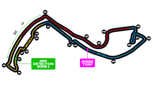
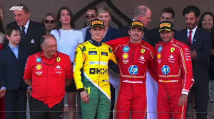

Monacói nagydíj a világ egyik legismertebb és legnehezebb Forma–1-es versenye, amelyet Monaco szűk utcáin rendeznek meg 1929 óta. A pálya különlegessége, hogy a versenyzők közutakon haladnak végig, alagutakon, éles kanyarokon és korlátokkal szegélyezett szakaszokon keresztül.

Monacói Nagydíj pályarajza
A futam a Forma-1 egyik legikonikusabb eseménye, és része az autósport „Tripla Koronájának” is. A pálya híres részei közé tartozik a hajtűkanyar, az alagút és a kikötő melletti szakasz.

Charles Leclerc első monacói győzelmének képe